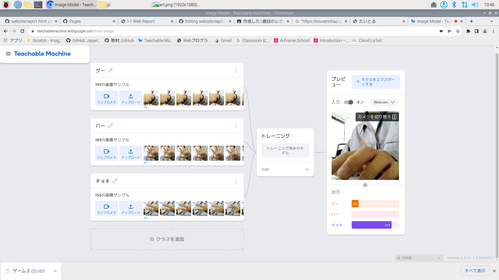
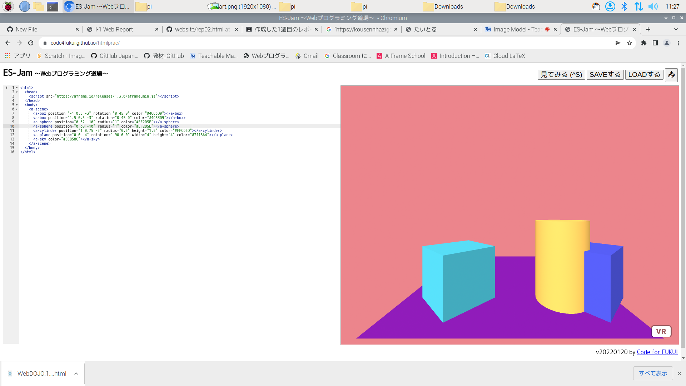

第2週目
2-1 レポートをHTMLで作る
１週目のレポート
1.内容
レポートHTMLを作成した
また２周目も同様にレポートHTMLを作成した。
2.感想
ゲームのプログラミングよりもHTMLのほうが 簡単だと思いました。
2-2 機械学習体験

1.内容
カメラで撮影した画像をもとにAIにじゃんけんを学ばせ、
いまカメラに写っている手が何を示しているのかを理解できるようにした。
2.感想
100枚ほどの画像では判定が少しこころもとなかったですが、
各200枚ずつほど学ばせるとかなり正確に判定できるようになりました。
ポイントは様々な角度から手を撮影させることだと思いました。
2-3 JavaScript体験：３次元モデルのプログラムを作る

３次元モデル
1.内容
webプログラミング道場というサイトを使って、HTMLでVRを体験出来るようになっていた。
非常に少ないプログラムで、立体的なものを見ることができた。
2.感想
HTMLよりはるかに少ないプログラムの量で、
よく見るVRの画面が出せると知って驚いた。
また、モノの配置や大きさ色までも簡単に変更できてとてもおもしろかったです。